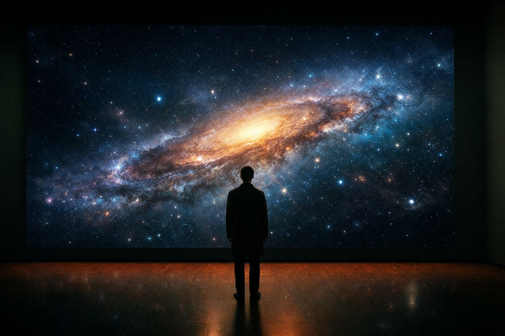
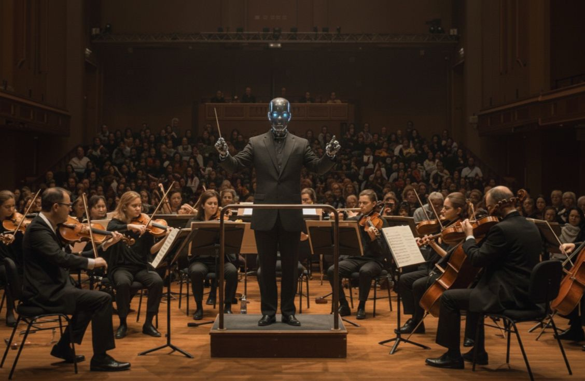

Writing
Thinking out loud.
Articles and insights about AI, technology and how organizations can work smarter.

The Nature of Intelligence
Is artificial intelligence really intelligent, or do we misunderstand intelligence itself?
We've forgotten how learning works.
In a world full of AI tools and instant answers, we've lost sight of the importance of deep learning.

De 3 AI-fases: van dirigent naar zelfspelend orkest
AI bevindt zich op een kantelpunt: van uitvoerend gereedschap naar zelfdenkend systeem.